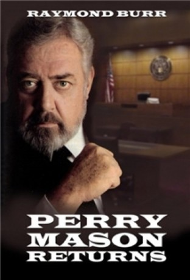

#6683 Perry Mason kehrt zurück
Alternativ: Perry Mason Returns
 
 IMDB-Wertung: 7.2 / 10
IMDB-Wertung: 7.2 / 10  Metascore: 0
Metascore: 0 
Perry Mason war als Strafverteidiger äußerst erfolgreich und arbeitet jetzt als Berufungsrichter. Als seine ehemalige Sekretärin Della Street beschuldigt wird, ihren letzten Arbeitgeber, den schwerreichen Arthur Gordon ermordet zu haben, kehrt Mason zu seiner alten Tätigkeit zurück. Er lässt sein Richteramt ruhen und übernimmt Dellas Verteidigung. Schon bald kommt er dahinter, dass die Familie des Toten einige Gründe gehabt hätte, den Mord zu begehen.
Jahr: 1985
Dauer: 89 Minuten
FSK:
Land: USA Studio: NBCTonspuren: DD5.1 - ,
Untertitel:
Auflösung: 1080p (1440x1080) Größe: 6000 MB
Genre: Drama, Krimi, Mystery
Regisseur: Ron Satlof
Drehbuch: Dean Hargrove
Soundtrack:
Darsteller:
 Raymond Burr als Perry Mason
Raymond Burr als Perry Mason Barbara Hale als Della Street
Barbara Hale als Della Street- William Katt als Paul Drake Jr.
 Holland Taylor als Paula Gordon
Holland Taylor als Paula Gordon Richard Anderson als Ken Braddock
Richard Anderson als Ken Braddock- Kerrie Keane als Kathryn Gordon
- Al Freeman Jr. als Lt. Cooper
- Roberta Weiss als Laura Gordon
- Cassie Yates als Barbara Scott
 Patrick O'Neal als Arthur Gordon
Patrick O'Neal als Arthur Gordon James Kidnie als Bobby Lynch
James Kidnie als Bobby Lynch- Lindsay Merrithew als Chris
- Cec Linder als Jack Welles
 J.C. MacKenzie als Gas Station Attendant
J.C. MacKenzie als Gas Station Attendant Doug Lennox als Vinnie
Doug Lennox als Vinnie- Frank Adamson als Mr. Williams
- Ken Pogue als Frank Lynch
 Don MacKay als (uncredited
Don MacKay als (uncredited- David McIlwraith als David Gordon
- Paul Hubbard als Sgt. Stratton
- Kathleen Laskey als Luanne
- Charles Macaulay als Judge Whitewood
- Mag Ruffman als Salesgirl
- Carolyn Hetherington als Mrs. Jeffries
- David Bolt als Mr. Henderson
- Lee Miller als Security Guard
- Nerene Virgin als Minicam Reporter
- Doris Petrie als Mrs. Lynch
- Lillian Lewis als Customer
- Derek Keurvorst als Court Clerk
- Dean Batute als Businessman , uncredited
Datei: X:\Person\Perry Mason\Perry Mason kehrt zurück (1985, FSK, 1440x1080).mkv seit 03.08.2017
Festplatte: HD Collection-7+mehr(A-Z)+Person
 Es gibt insgesamt 20 Filme in der Gruppe 'Person\Perry Mason'
Es gibt insgesamt 20 Filme in der Gruppe 'Person\Perry Mason'